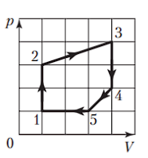
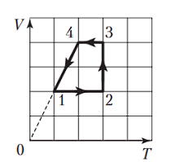
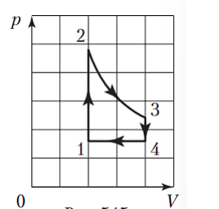
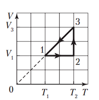
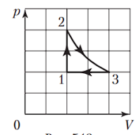
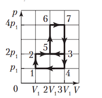
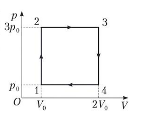
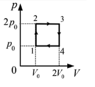
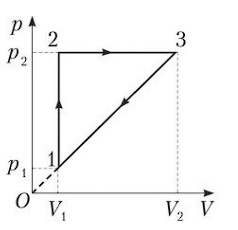

ДЗ 27-28
КПД. Тепловые двигатели
Выберите вариант ответа или введите полученное числовое значение.
Задача 1
Состояние идеального газа изменялось по циклу, представленному на рисунке 161. Газ получал энергию на участках:

Решение:
В соответствии с первым законом термодинамики газ получал энергию на участках $1 \to 2$, $2 \to 3$.
Задача 2
На рисунке 164 показан цикл, который совершает идеальный газ в количестве $\nu = 1,5\text{ моль}$. В состоянии 1 температура газа $T_1 = 300\text{ К}$, в состоянии 4 — $T_4 = 600\text{ К}$. Если в процессе $2 \to 3$ газу было передано количество теплоты $Q_{23} = 6,84\text{ кДж}$, то полезная работа $A_{\text{пол}}$, совершенная газом за цикл, равна:

Решение:
На рисунке 515 показан график зависимости давления $p$ газа от его объема $V$. При изотермическом процессе $2 \to 3$ работа газа равна количеству теплоты, полученному газом: $A_{23} = Q_{23}$. Полезная работа, совершенная за цикл, $A_{\text{пол}} = A_{23} - |A_{41}|$. Работа $A_{41} = \nu R(T_1 - T_4)$. Из записанных уравнений найдем ответ: $A_{\text{пол}} = 3,1\text{ кДж}$.

Задача 3
Тепловой двигатель, термический коэффициент полезного действия которого $\eta_{\text{т}} = 13\text{ }\%$, работает по циклу, изображенному на рисунке 167. Рабочим телом является идеальный одноатомный газ в количестве $\nu = 0,50\text{ моль}$. Температура газа в состояниях 1 и 2 соответственно $T_1 = 335\text{ К}$ и $T_2 = 670\text{ К}$. Если объем $V_3 = 2V_1$, то работа $A_{23}$, совершенная силами давления газа при изотермическом расширении, равна:

Решение:
На рисунке 518 показан график зависимости давления $p$ газа от его объема $V$. Термический КПД цикла
$$\eta_{\text{т}} = \frac{A_{\text{пол}}}{Q_1} \cdot 100\text{ }\%.$$
Полезная работа $A_{\text{пол}} = A_{23} - \nu R(T_3 - T_1)$, где $T_3 = T_2$. Количество теплоты, полученное газом за цикл, $Q_1 = Q_{12} + Q_{23}$. По первому закону термодинамики
$$Q_{12} = \frac{3}{2}\nu R(T_2 - T_1),\quad Q_{23} = A_{23}.$$
Из записанных уравнений найдем ответ: $A_{23} = 1,9\text{ кДж}$.

Задача 4
Рабочим телом в циклах $1 \to 2 \to 3 \to 4 \to 1$ (цикл I) и $5 \to 6 \to 7 \to 3 \to 5$ (цикл II), представленных на рисунке 169, является идеальный одноатомный газ. Отношение термических коэффициентов полезного действия циклов $\frac{\eta_{\text{тI}}}{\eta_{\text{тII}}}$ равно:

Решение:
Полезные работы, совершенные газами в этих циклах, одинаковы. Газ в цикле I получает энергию на процессах $1 \to 2$ и $2 \to 3$. В цикле II газ получает энергию на процессах $5 \to 6$ и $6 \to 7$. По первому закону термодинамики количество теплоты, полученное газом:
$$Q_{12} = \Delta U_{12} = \frac{3}{2}p_1 V_1,\quad Q_{23} = \Delta U_{23} + A_{23} = 10p_1 V_1,$$
$$Q_{56} = \Delta U_{56} = 6p_1 V_1,\quad Q_{67} = \Delta U_{67} + A_{67} = 10p_1 V_1.$$
Отсюда $(Q_1)_{\text{I}} = 11,5p_1 V_1$ и $(Q_1)_{\text{II}} = 16p_1 V_1$. Искомое отношение:
$$\frac{\eta_{\text{тI}}}{\eta_{\text{тII}}} = \frac{32}{23}.$$
Задача 5
На пути $s = 100\text{ км}$ двигатель мотоцикла при средней скорости движения, модуль которой $\langle\upsilon\rangle = 108\text{ }\frac{\text{км}}{\text{ч}}$, потребляет бензин $\left(q = 46\text{ }\frac{\text{МДж}}{\text{кг}}\right)$ массой $m = 5,8\text{ кг}$. Если эффективный коэффициент полезного действия двигателя $\eta = 25\text{ }\%$, то средняя мощность $\langle P\rangle$ двигателя равна:
Решение:
Эффективный КПД теплового двигателя $\eta_{\text{э}} = \frac{E_{\text{п}}}{Q}\cdot 100\text{ }\%$. Полезная энергия двигателя:
$$E_{\text{п}} = \langle P\rangle \frac{s}{\langle\upsilon\rangle}.$$
Количество теплоты, полученное двигателем, $Q = qm$. Из записанных уравнений найдем ответ: $\langle P\rangle = 20\text{ кВт}$.
Задача 6
Автомобиль движется равномерно со скоростью $\upsilon = 90\text{ }\frac{\text{км}}{\text{ч}}$ и на пути $s = 100\text{ км}$ расходует $V = 8,0\text{ л}$ топлива $\left(\rho = 745\text{ }\frac{\text{кг}}{\text{м}^3},\; q = 44,6\text{ }\frac{\text{МДж}}{\text{кг}}\right)$. Если двигатель автомобиля развивает механическую мощность $P = 16\text{ кВт}$, то коэффициент полезного действия $\eta$ двигателя равен ... %
Решение:
Для выполнения задания необходимо уметь решать задачи на расчёт коэффициента полезного действия теплового двигателя.
Коэффициент полезного действия двигателя автомобиля:
Коэффициент полезного действия двигателя автомобиля:
$$\eta = \frac{Pt}{qm},\text{ где } t = \frac{s}{\upsilon}\text{ — время движения автомобиля; } m = \rho V\text{ —}$$
масса сгоревшего топлива. Окончательно получаем:
$$\eta = \frac{Ps}{q\rho V\upsilon};$$
$$\eta = \frac{16\cdot 10^3\text{ Вт}\cdot 100\cdot 10^3\text{ м}}{44,6\cdot 10^6\text{ }\frac{\text{Дж}}{\text{кг}}\cdot 745\text{ }\frac{\text{кг}}{\text{м}^3}\cdot 8,0\cdot 10^{-3}\text{ м}^3\cdot 25\text{ }\frac{\text{м}}{\text{с}}} = 0,24 = 24\text{ }\%.$$
Ответ: 24
Задача 7
Термический коэффициент полезного действия теплового двигателя $\eta_1 = 20\text{ }\%$. Если после изменения условий работы двигателя количество теплоты, полученное от нагревателя за цикл, увеличилось на $k = 20\text{ }\%$, а количество теплоты, переданное холодильнику, уменьшилось на $n = 10\text{ }\%$, то термический коэффициент полезного действия $\eta_2$ теплового двигателя стал равен ... %
Решение:
Для выполнения задания необходимо уметь решать задачи на расчёт термического коэффициента полезного действия теплового двигателя.
Термический коэффициент полезного действия теплового двигателя:
Термический коэффициент полезного действия теплового двигателя:
$$\eta_1 = 1 - \frac{|Q_2|}{Q_1},\text{ откуда } \frac{|Q_2|}{Q_1} = 1 - \eta_1.$$
После изменения условий работы двигателя:
$$\eta_2 = 1 - \frac{(1 - n)|Q_2|}{(1 + k)Q_1} = 1 - \frac{1 - n}{1 + k}(1 - \eta_1).$$
$$\eta_2 = 1 - \frac{1 - 0,10}{1 + 0,20}(1 - 0,20) = 0,40 = 40\text{ }\%.$$
Ответ: 40
Задача 8
Тепловой двигатель, рабочим телом которого является идеальный газ, совершает цикл, изображенный на рисунке 2.30. Термический КПД $\eta$ двигателя равен:

Решение:
По определению термический КПД теплового двигателя
Полезная работа численно равна площади прямоугольника, ограниченного циклом:
$A_{123} = A_{12} + A_{23} = A_{23}$, так как процесс $1 \to 2$ изохорный и $A_{12} = 0$. Работа $A_{23}$ численно равна площади прямоугольника $V_0 2 3 2V_0$:
$$\eta = \frac{A_{\text{п}}}{Q_1},$$
где $A_{\text{п}}$ — полезная работа, совершаемая идеальным газом за цикл; $Q_1$ — количество теплоты, полученное газом от нагревателя.Полезная работа численно равна площади прямоугольника, ограниченного циклом:
$$A_{\text{п}} = (3p_0 - p_0)(2V_0 - V_0) = 2p_0 V_0.$$
Рабочее тело получает от нагревателя количество теплоты $Q_1$ в процессах $1 \to 2$ и $2 \to 3$. По первому закону термодинамики
$$Q_1 = A_{123} + \Delta U_{123}.$$
Работа газа зависит от вида процесса.$A_{123} = A_{12} + A_{23} = A_{23}$, так как процесс $1 \to 2$ изохорный и $A_{12} = 0$. Работа $A_{23}$ численно равна площади прямоугольника $V_0 2 3 2V_0$:
$$A_{123} = A_{23} = 3p_0(2V_0 - V_0) = 3p_0 V_0.$$
Изменение внутренней энергии:
$$\Delta U_{123} = U_3 - U_1 = \frac{3}{2}\nu R(T_3 - T_1).$$
Запишем для состояний 1 и 3 газа уравнение Клапейрона — Менделеева:
$$\nu RT_1 = p_0 V_0;\quad \nu RT_3 = 3p_0 \cdot 2V_0 = 6p_0 V_0.$$
Тогда $\Delta U_{123} = \frac{3}{2}(6p_0 V_0 - p_0 V_0) = \frac{15}{2}p_0 V_0$. Следовательно,
$$Q_1 = 3p_0 V_0 + \frac{15}{2}p_0 V_0 = \frac{21}{2}p_0 V_0.$$
Искомый термический КПД:
$$\eta = \frac{2p_0 V_0}{\frac{21}{2}p_0 V_0} = \frac{4}{21} = 19\text{ }\%.$$
Задача 9
На $p-V$-диаграмме представлен замкнутый цикл, проводимый с идеальным одноатомным газом. Термический коэффициент полезного действия $\eta$ этого цикла равен ... %

Решение:
Для выполнения задания необходимо уметь решать задачи на определение коэффициента полезного действия тепловых двигателей.
Термический коэффициент полезного действия
$Q_1$ — количество теплоты, полученное рабочим телом от нагревателя.
На участке $1-2$ $V = \text{const}$. $Q_{12} = \Delta U_{12} = \frac{3}{2}p_0 V_0$.
На участке $2-3$ $p = \text{const}$.
Таким образом, $Q_1 = Q_{12} + Q_{23}$.
Термический коэффициент полезного действия
$$\eta = \frac{A_{\text{ц}}}{Q_1} \cdot 100\text{ }\%,$$
где работа газа за цикл $A_{\text{ц}}$ определяется площадью фигуры внутри этого цикла, то есть $A_{\text{ц}} = p_0 V_0$.$Q_1$ — количество теплоты, полученное рабочим телом от нагревателя.
На участке $1-2$ $V = \text{const}$. $Q_{12} = \Delta U_{12} = \frac{3}{2}p_0 V_0$.
На участке $2-3$ $p = \text{const}$.
$$Q_{23} = \Delta U_{23} + A_{23} = \frac{3}{2}\cdot 2p_0 V_0 + 2p_0 V_0 = 5p_0 V_0.$$
На других участках рабочее тело отдавало тепло.Таким образом, $Q_1 = Q_{12} + Q_{23}$.
$$Q_1 = \frac{3}{2}p_0 V_0 + 5p_0 V_0 = 6,5p_0 V_0.$$
$$\eta = \frac{p_0 V_0}{6,5p_0 V_0} \cdot 100\text{ }\% = 15\text{ }\%.$$
Ответ: 15
Задача 10
С одноатомным идеальным газом, количество вещества которого $\nu$ моль, совершают цикл, где $1 \to 2$ — изохора, $2 \to 3$ — изобара, $3 \to 1$ — прямая, проходящая через начало координат (рис. 2.31). Отношение давлений в состояниях 2 и 1 $\frac{p_2}{p_1} = k$. Температура газа в состоянии 3 равна $T_3$. Термический КПД $\eta$ цикла $1 \to 2 \to 3$ равен:

Решение:
Термический коэффициент полезного действия двигателя — это отношение полезной работы $A_{\text{п}}$ к количеству теплоты, полученному рабочим телом от нагревателя:
$$\eta = \frac{A_{\text{п}}}{Q_1},$$
$$Q_1 = Q_{123} = A_{123} + \Delta U_{123},$$
где $A_{123}$ — работа, совершенная газом в процессе нагревания и расширения; $\Delta U_{123} = U_3 - U_1$ — изменение внутренней энергии в этих процессах;
$$U_1 = \frac{3}{2}\nu RT_1\text{ и } U_3 = \frac{3}{2}\nu RT_3\text{ — внутренняя энергия газа в состояниях 1 и 3.}$$
Из решений задач 7 и 8 имеем:
$$A_{123} = \frac{k-1}{k}\nu RT_3;\quad A_{\text{п}} = \frac{1}{2}\nu RT_3\left(\frac{k-1}{k}\right)^2;\quad T_1 = \frac{T_3}{k^2}.$$
Поэтому
$$\Delta U_{123} = \frac{3}{2}\nu R(T_3 - T_1) = \frac{3}{2}\nu R\left(T_3 - \frac{T_3}{k^2}\right) = \frac{3}{2}\nu RT_3\frac{k^2 - 1}{k^2};$$
$$Q_1 = \frac{k-1}{k}\nu RT_3 + \frac{3}{2}\nu RT_3\frac{k^2 - 1}{k^2} = \frac{k-1}{k}\nu RT_3\left(1 + \frac{3}{2}\frac{(k+1)}{k}\right) = \frac{(5k+3)(k-1)}{2k^2}\nu RT_3.$$
Искомый термический КПД двигателя:
$$\eta = \frac{\frac{1}{2}\nu RT_3\left(\frac{k-1}{k}\right)^2}{\frac{(5k+3)(k-1)}{2k^2}\nu RT_3} = \frac{k-1}{5k+3}.$$